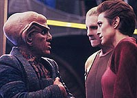
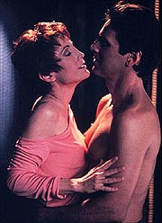
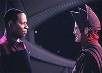
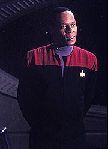
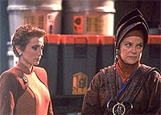

MANCHETE
DO EPISDIO
Eleio
do novo kai em Bajor: um
prato cheio para a major Kira Nerys
Episdio
anterior | Prximo
episdio
Sinopse:
Data Estelar:
desconhecida.
Faltando apenas dois dias para a
eleio do novo kai (lder religioso dos Bajorianos), vedek
Bareil, o preferido da desaparecida kai Opaka e virtual vencedor
do pleito, recebe uma viso dos Profetas que parece sugerir que
ele foi o responsvel pelo suicdio de Prylar Bek, o monge
Bajoriano que (a histria oficial conta) forneceu a exata
localizao de uma clula da resistncia Bajoriana aos
Cardassianos, resultando na morte de 43 rebeldes, incluindo o prprio
filho de Opaka (este evento conhecido como "massacre do
vale Kendra"). Nem mesmo o amor de Kira parece conseguir
acalmar a conscincia de Bareil.

Vedek
Winn tambm est na estao e se encontra com Bareil e Kira.
Logo em seguida, um antigo colaborador Bajoriano, o secretrio
Kubus, reconhecido e preso por Odo. Winn e Kubus trocam
olhares. Pouco depois de Kira apresentar a Kubus a impossibilidade
de permitir o retorno dele a Bajor, devido a um conhecido
dispositivo legal de automtico exlio a colaboradores
Bajorianos da poca da ocupao, Odo chama a major para
informar que Winn ofereceu santurio a Kubus, aps o
ex-colaborador ter pedido uma audincia com a vedek.
Kira e Odo descobrem que Winn andou pesquisando sobre o tal
"massacre do vale Kendra". A major no permite que Winn
leve Kubus para Bajor em sua nave. A vedek revela a Kira que Kubus
resolveu trocar uma informao pela sua anistia. A informao
de que Bareil que foi o traidor e no Bek --Bareil teria
forado Bek a fornecer a localizao da base rebelde.
Winn oferece a Kira a chance de fazer uma completa investigao
sobre o assunto. Enquanto isso, ela promete que no ir tornar pblico
o possvel envolvimento de Bareil no "massacre". Kubus
afirma que Bareil veio ver Bek na estao, na noite anterior ao
suicdio do monge. Bareil confirma a informao mas no pode
revelar a Kira a natureza de sua conversa com Bek, devido a
confidencialidade da confisso.

Odo
informa Kira de que os registros de todas as comunicaes de Bek
com a assemblia dos vedeks na semana anterior ao
"massacre" foram selados, algo que s um vedek poderia
fazer. Quark presta um favor a Kira e Odo e consegue acessar os
registros mas os arquivos foram apagados. O'Brien consegue
descobrir a identidade de quem os apagou: vedek Bareil.
Bareil confessa a Kira que ordenou a Bek que desse a informao.
Ele trocou a vida de 43 Bajorianos pela de 1.200, a populao
total do vale que seria dizimada se os Cardassianos no
descobrissem a exata localizao da base rebelde. Quando Kira
vai informar a Winn sobre sua descoberta, Winn lhe informa que
Bareil acaba de desistir de sua candidatura. Kira fica intrigada,
Bareil no iria simplesmente se esquivar da verdade. Kira e
O'Brien voltam a analisar os registros e descobrem toda a verdade.
Kira vai a Bajor no dia em que Winn eleita a nova kai. Ela
confronta Bareil que finalmente admite que foi Opaka a real
colaboradora. Ela sacrificou a vida de seu filho e mais 42 membros
da resistncia para salvar 1.200 civis, enquanto Bareil
sacrificou a sua carreira poltica para preservar a memria de
Opaka.
Comentrios:
A "ocupao Bajoriana" sempre um rico terreno de
onde se pode extrair potente drama com fascinantes tons de cinza.
Em "The Collaborator" esses "tons de
cinza" acabam por tocar mesmo a desaparecida lder religiosa
Bajoriana, a reverenciada kai Opaka. Com mais uma comovente atuao
de Nana Visitor e uma infinitamente acertada deciso de fazer de
Winn a nova kai ao final do episdio, o segmento em questo
acaba por constituir uma excelente hora de televiso. Saiba mais
detalhes, sem precisar colaborar com os Cardassianos no processo,
nas prximas linhas.

A
trama do episdio bastante convencional: o nobre vedek Bareil
vai ser eleito o novo kai Bajoriano; Bareil acusado de ser um
colaborador Cardassiano e vai ser investigado; as evidncias
reveladas apontam claramente para a culpa do vedek; ele retira a
sua candidatura a Kai, virtulamente assumindo tal culpa e, ao
final, o (novamente) nobre Bareil confessa a Kira estar protegendo
a memria de kai Opaka (com o bnus extra para a qualidade do
episdio, de isto acontecer aps a eleio de Winn), a real
colaboradora.
Fazendo da acusadora, vedek Winn, a sua maior concorrente a
corrida para se tornar kai, e da investigadora, a major Kira, sua
namorada realmente apaixonada por ele, s serve para tornar o
drama mais interessante. A eleio de Winn, ainda que no
surpreendente, foi extremamente acertada, oferecendo inmeras
possibilidades dramticas interessantes ao longo da srie.
O nico real problema estrutural do episdio foi relativo
sub-trama envolvendo Kubus. A troca de favores entre Kubus e Winn
absolutamente aceitvel (bem como a necessria, mas no
descrita, troca de favores de Winn com o governo provisrio, para
conseguir honrar a sua parte no acordo), porm a falta de
fechamento ao final do episdio, em que ficamos sem saber se o
ex-secretrio recebeu ou no o asilo, bastante frustrante,
emprestando um ar de "mal-acabado" ao episdio.
(Se extrapolarmos sobre a atitude de Winn em relao ao encontro
com Sisko, acho que Kubus teve mesmo de voltar --com alguma
sorte-- para Cardssia. O conceito do secretrio Kubus foi muito
interessante, mas foi utilizado apenas como um dispositivo para
fazer a trama funcionar, o que uma pena.)

As
imagens dos Orbs so sempre interessantes, seja por
exemplificarem uma caracterstica estilstica nica da srie,
seja por oferecerem uma forma consistente de apresentar vislumbres
para futuros acontecimentos. A maior parte das imagens
apresentadas aqui tem o seu imediato "payoff" no curso
do episdio, da no serem necessrios comentrios
adicionais. Algumas imagens, possivelmente destinadas ao futuro de
Bareil, sugerem o uso por ele das tticas de Winn (uma aluso ao
veneno da cobra, "cobra=Winn") e uma sugesto de futura
aliana (sugerida pela viso de intimidade) com a agora kai de
Bajor.
(Infelizmente nenhuma dessas previses chegou a ser concretizada
de forma muito clara, pois o personagem foi morto durante a
terceira temporada. Mais detalhes na poca devida.)
Winn, mais hipcrita, manipuladora e condescendente do que nunca,
consegue tirar o melhor da situao com Sisko, Kubus, Kira e
Bareil. O fato de ela manter a sua palavra e no revelar nada
sobre a investigao sobre Bareil, mesmo aps a sua eleio
como kai, no lhe confere nenhuma nobreza subjacente mas sim uma
grande perfeio em fazer o mal.
Fazendo uma comparao, Dukat e Winn parecem representar as duas
faces da mesma moeda, o Cardassiano distorce em sua cabea o
mundo que o cerca em uma forma que sempre o coloca como uma espcie
de heri romntico, enquanto a Bajoriana rescreve em sua mente a
tica e a moral do universo, colocando-a como modelo de tal ordem
de conduta. Ao final ambos procuram pela mesma coisa, um tal nvel
de poder que os permita ser "gentis e condescendentes"
com seus "sditos".
(Uma aliana entre Dukat e Winn finalmente iria surgir no
"captulo final" de DS9, na stima temporada.
Quem viver, ver.)

Kira
foi a fora motriz do episdio, carregando-o com um incrvel
senso de dever, tica e nobreza. Com tudo isto aliado a uma
inquietao, com a qual qualquer espectador pode se relacionar e
simpatizar. A conversa com Kubus, a "conversa" com Odo,
a promessa de investigar Bareil feita a Winn, a descoberta da
"verdade" sobre Bareil, a descoberta sobre a real
verdade envolvendo Opaka e os "parabns" nova kai s
comprovam que personagem maravilhoso ela , correspondendo s
nossas expectativas e ao mesmo tempo nos surpreendendo um pouco em
cada situao.
A direo de Cliff Bole foi competente, mas no exatamente no
mesmo nvel das dos ltimos esforos da srie. Comparando esta
com a direo de Kim Friedman em "The
Wire", um episdio com caractersticas similares
como cenas longas com apenas dois atores e ausncia de ao
convencional, se observa uma clara desvantagem. As vises do Orb
foram excelentes, como usual com qualquer diretor.
O elenco regular esteve todo bastante afinado esta semana,
principalmente Shimerman, mas o destaque obviamente para Nana
Visitor. Reparem, por exemplo, na cena em que Kira explica a Kubus
que ele no pode voltar a Bajor, um texto bem convencional que
ela empresta uma fora e, principalmente, uma verdade tremendas.
A difcil bater Visitor quanto a emoo e sinceridade.
Dentre os convidados fica o destaque absoluto para Fletcher, com
seu semblante doce contraposto aos atos impiedosos e amorais de
Winn. Anglim mostra uma performance claudicante. Aparentemente,
quando ele de que dar uma "esticada" no personagem, se
perde e desestabiliza um pouco a caracterizao. Ele parece s
funcionar bem com um Bareil totalmente contido. Saviola e os
outros convidados fizeram o pedido e nada mais.
na cena em que Kira diz a Odo que est apaixonada por Bareil,
que temos o primeiro momento na srie em que percebemos que o
comissrio tem sentimentos pela major.
A fala de Odo de que em difceis circunstncias mesmo os
melhores de ns so capazes de coisas terrveis pode ser
interpretada tanto como uma referncia aos acontecimentos de "Necessary
Evil" tanto como um "setup" para a revelao
final de Opaka como colaboradora.
A cena entre Quark, Kira e Odo foi simplesmente maravilhosa, com
direito minha favorita regra de aquisio Ferengi.
A nica cena de Sisko do episdio foi o nico momento em toda a
temporada em que ele foi referido como "Emissrio".
Aparentemente a assemblia dos vedeks que escolhe o novo Kai,
certo? Ento por que aquele papo entre Kira e Bareil sobre em
quem ela ia votar?
"The Collaborator" mais um exemplo da unio
de uma trama simples (com uma escolha brilhante na eleio de
Winn) com temas relevantes (Bajorianos, Cardassianos e a ocupao)
e notveis atuaes (especialmente de Fletcher e Visitor), que
acaba por constituir mais um substantivo "vencedor",
100% DS9. O segmento consolida a major Kira no posto de, de
fato, protagonista das duas primeiras temporadas da srie.
Citaes
Winn - "I know you're
under a terrible strain, but, if you're wise, you will never speak
to me with such disrespect again."
("Eu sei que voc est sob uma presso terrvel, mas, se
voc for sbia, nunca mais falar comigo com tamanho
desrespeito de novo.")
Quark - "Perfect. Not only is it illegal, it's
sacrilegious."
("Perfeito. No s ilegal, um sacrilgio.")
Quark - "No good deed goes unpunished."
("Nenhuma negociao justa sai impune.")
Kira - "The question is, where will she lead us?"
("A questo , para onde ela ir nos liderar?")
Bareil - "Down paths she cannot possibly imagine. She's
going to need our help along the way, even if she doesn't realize
it yet."
("Por caminhos que ela nem pode imaginar. Ela vai precisar de
nossa ajuda no caminho, mesmo que ela no perceba agora.")
Trivia:
 Presena de Philip Anglim como Vedek Bareil Antos. O personagem
aparece nos seguintes episdios ao longo da srie: "In
the Hands of the Prophets", "The
Circle", "The
Siege", "Shadowplay",
"The Collaborator", "Fascination"
e "Life Support". Philip Anglim tambm
interpreta o "mirror-Bareil" em "Ressurection",
da sexta temporada.
Presena de Philip Anglim como Vedek Bareil Antos. O personagem
aparece nos seguintes episdios ao longo da srie: "In
the Hands of the Prophets", "The
Circle", "The
Siege", "Shadowplay",
"The Collaborator", "Fascination"
e "Life Support". Philip Anglim tambm
interpreta o "mirror-Bareil" em "Ressurection",
da sexta temporada.
Presena de Louise Fletcher como Vedek Winn Adami. O personagem
aparece nos seguintes episdios ao longo da srie: "In
the Hands of the Prophets", "The
Circle", "The
Siege", "The Collaborator", "Life
Support", "Shakaar", "Rapture",
"In the Cards", "The Reckoning",
"'Til Death Do Us Part", "Strange
Bedfellows", "The Changing Face of Evil",
"When it Rains..." e "What You Leave
Behind".
Presena de Camille Saviola como Kai Opaka. O personagem aparece
nos seguintes episdios ao longo da srie: "Emissary",
"Battle
Lines", "The Collaborator" (como uma
viso dos Profetas) e "Accession" (tambm como
uma viso dos Profetas).
Gary Holland, o autor da histria e do primeiro rascunho do
roteiro do episdio, foi responsvel pela propaganda e divulgao
de DS9 durante toda a sua produo. Escrever para Jornada
era um sonho de infncia dele.
Aps conversarem por quase um ano sobre a eleio de Bareil
como novo kai, os produtores acabaram voltando atrs por
considerar que esta situao ofereceria pouco conflito e drama
relevante para as contnuas histrias da srie e preferiram a
soluo adotada ao final do episdio.
Ficha
tcnica:
Histria de Gary Holland
Roteiro de Gary Holland e Ira Steven Behr & Robert
Hewitt Wolfe
Direo de Cliff Bole
Exibido em 23/05/1994
Produo: 044
Elenco:
Avery Brooks como
Benjamin Lafayette Sisko
Ren Auberjonois como Odo
Nana Visitor como Kira Nerys
Colm Meaney como Miles Edward O'Brien
Siddig El Fadil como Julian Subatoi Bashir
Armin Shimerman como Quark
Terry Farrell como Jadzia Dax
Cirroc Lofton como Jake Sisko
Elenco convidado:
Philip Anglim
como vedek Bareil
Bert Remsen como Kubus Oke
Camille Saviola como kai Opaka
Louise Fletcher como vedek Winn
Charles Parks como Eblan
Tom Villard como Prylar Bek